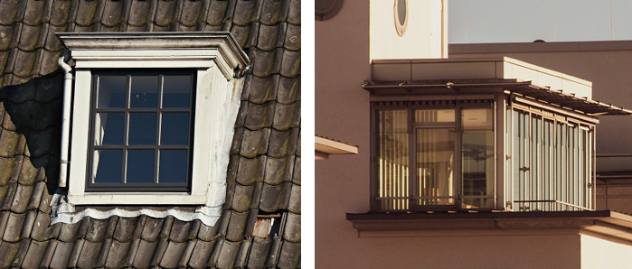

Soms lijkt wat u wilt plaatsen op een dakkapel, maar is het volgens de bouwregels een dakopbouw. Voor een dakopbouw gelden andere regels. En heeft u vaak ook een andere vergunning nodig.

Voorbeeld dakkapel (links) en dakopbouw (rechts).
Gaat u een dakopbouw plaatsen? Dan selecteert u een andere werkzaamheid. Meer informatie vindt u op de pagina Woning verbouwen. (opent in nieuw venster)
Dit zijn voorbeelden van vragen die u kunt krijgen in de Vergunningcheck:
Afhankelijk van uw locatie en situatie kunt u ook andere vragen krijgen.
Of u een vergunning nodig heeft voor een dakkapel hangt af van waar en hoe u deze plaatst. Verschillende overheden kunnen regels stellen:
Meerdere overheden kunnen dus samen bepalen wat mag. Meestal is dat uw gemeente of waterschap. Maar soms is dat de provincie of Rijksoverheid. Daardoor kunt u vragen krijgen van verschillende overheden. Soms heeft u ook van meerdere overheden toestemming nodig.
De Vergunningcheck duurt ongeveer 15 tot 30 minuten.
U kunt tussendoor opslaan en later verdergaan.
Vragen over uw vergunning of melding? Neem contact op met uw gemeente of waterschap.
Vragen over hoe het Omgevingsloket werkt? Kijk in het Helpcentrum. (opent in nieuw venster)